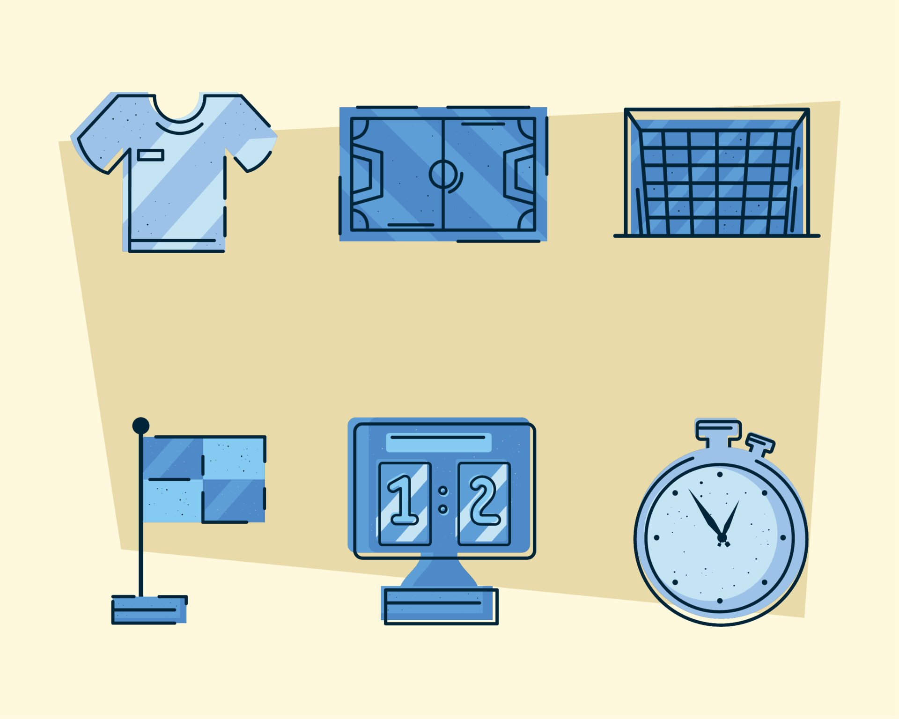

Soccer Tech and Analytics: How Clubs Are Using Data to Find the Next Star
May 6, 2022
Who Are Football’s Star Data Analysts?
Many people know famous football players like Mo Salah, Cristiano Ronaldo, Messi, or great coaches like Jürgen Klopp. But not many know about the data analysts who help teams win from behind the scenes. These people study numbers, videos, and player movements to help coaches make smart decisions (AnalyiSport).
Football clubs today collect huge amounts of information every time players train or play a match. Cameras and GPS trackers record how fast players run, where they move, when they pass, shoot, or tackle. Experts say that more than 2,000 pieces of data are recorded in every match, plus 1.5 million tracking points about player movements (AnalyiSport).
One of the best-known data experts is Ian Graham, who leads the data department at Liverpool FC. His team helps clubs sign great players and build strong tactics using smart data analysis (AnalyiSport).
Graham and his team use formulas like “goal probability added” to evaluate each player’s impact on scoring chances. This helps teams find underrated players who are better than they first appear (AnalyiSport).
Liverpool isn’t the only club investing in data experts. Manchester City also hires top scientists, including those from Harvard or even government work, to stay ahead (AnalyiSport).
Experts believe data analysts will become even more important, potentially advising coaches in real time during matches. Their work is changing football behind the scenes (AnalyiSport).